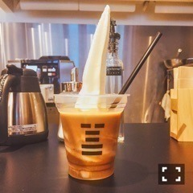

| 2016/09 11 Sun | 斎藤ちはる 人の頑張る姿って一番綺麗だと思う(´>∀<｀)ゝ |
ちはるーむへようこそ！
今日は花奈と一緒に生駒が出演している
舞台「こち亀」を観に行ってきました〜♪
(残念ながら写真が撮れなかったので
花奈との、ちょっと前の写真◎)
今までで一番笑った舞台でした！
演技も歌もダンスもボケもツッコミも
全てが素晴らしくて
ずっとにやにや笑いながら観てました。
面白すぎて本当びっくり。
心が豊かになるような
とっても楽しい舞台をありがとうございました！
そして生駒、とっても素敵でした( ;o; )
ライブもあった中でこんな短期間で
演技や歌を完成させて、
それでいてそんな大変そうな素振りも見せず
舞台上での楽しそうな姿や全力の姿が
本当にカッコよかった！！！
カッコよかったし
物凄く可愛かったよ(﹡ˆ ˆ﹡)
歌もソロで歌うのは内心緊張してたと思うけど
そんな風に聞こえず、堂々とした歌声でした！
音もズレてなかったし
生駒の歌の癖が歌詞や雰囲気に合ってて
とってもよかった( ˘ω˘ )
まだまだ続く舞台頑張ってね！
応援してる(﹡ˆ ˆ﹡)
それと、観に行ってない皆さん、
是非観に行った方がいいと思います！
観た後、観にきてよかったなって
心から思えるので(｡･o･｡)ﾉ
-------------------------♡
ちは"食"散歩！
今日は舞台観終わりに、
花奈とマネージャーと3人、
美味しい！と声が揃った
ソフトクリームを紹介します♪
白一さんの珈琲牛乳(ソフトクリーム)！

珈琲牛乳の中に
ソフトクリームが入っている
シンプルな飲み物なのですが、
ソフトクリームはトロトロせず
固めなので暫く溶けないので
しっかり最後まで食べられます。
そして珈琲牛乳なので甘い珈琲で
とっても飲みやすく
ソフトクリームと相性がいい！
びよーんと伸びてるソフトクリーム
ずっと気になってたので
今日行けてよかった！( ◦˙ ˙◦ )
生アイス、美味しかった( ;o; )
また食べたい( ;o; )
今度は普通のコーンのソフトクリーム狙いで
行こうと思います( ˘ω˘ )
花奈はまた別の食べてた♪
そちらも美味しそうでした。
-------------------------♡
♬ ChihaMusic
「赤黄色の金木犀」フジファブリックさん
秋が待ち遠しくなる曲。
私、金木犀の香りが大好きで
香水があれば欲しい！
と思ってしまうほど。
なのでこの曲の金木犀の香りがしてきそうな
柔らかい雰囲気が大好き。
金木犀の香り嗅ぎたくなる〜
今日は足がパンパンだ〜
お風呂にゆっくり入ってから
眠ります(｡･o･｡)ﾉ
おやすみ〜
斎藤ちはる